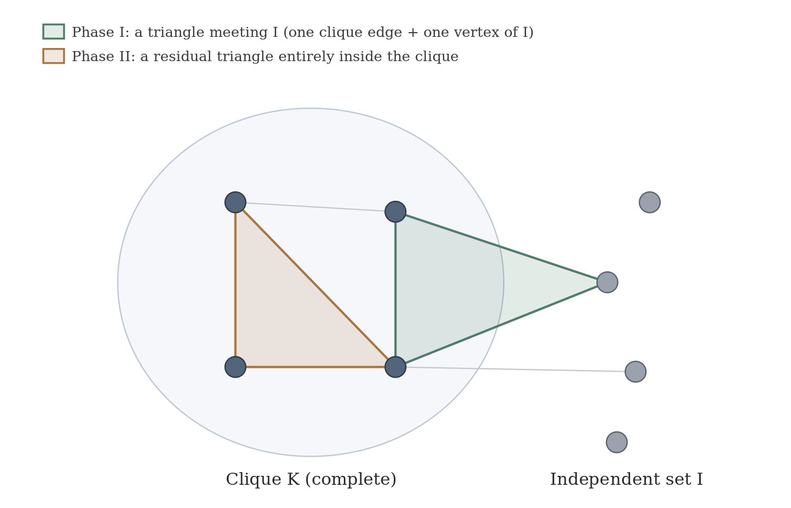
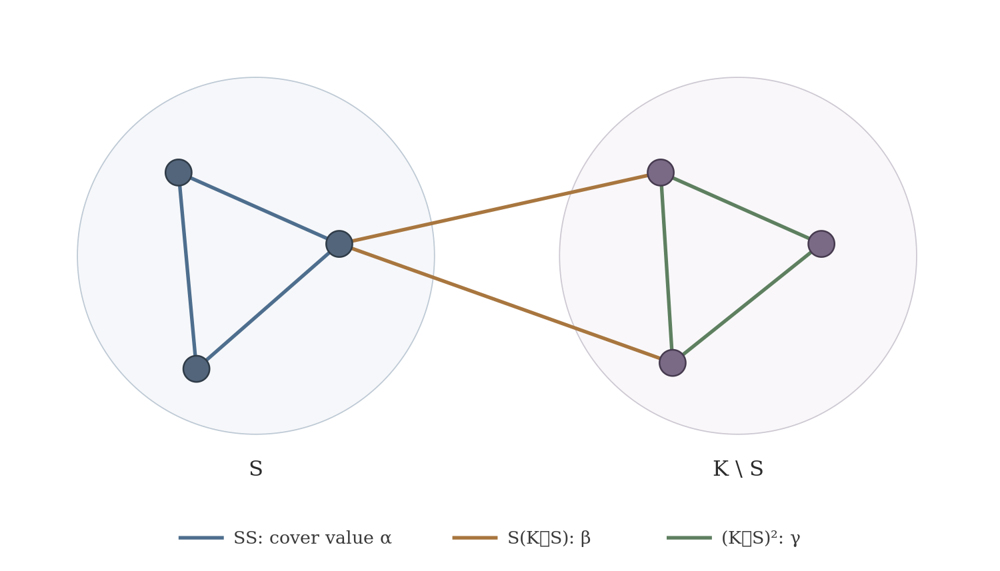

The one-paragraph storyLa historia en un párrafo
A split graph is a clique glued to an edge-free set. This paper measures how far such a graph is from being perfectly tiled by triangles, in a relaxed (fractional) sense, and proves a clean quadratic ceiling with a finite, fully checkable argument — machine-verified in Lean.Un grafo split es un clique pegado a un conjunto sin aristas. Este paper mide cuán lejos está ese grafo de teselarse perfectamente por triángulos, en sentido relajado (fraccional), y prueba un techo cuadrático limpio con un argumento finito y verificable — comprobado por máquina en Lean.
IntuitionIntuición
Write the split graph as clique K plus independent set I. Triangles that touch I can be packed explicitly; the leftover capacity on the clique edges turns, by finite LP duality, into a cover problem over one fixed polytope.Escribe el grafo split como clique K más conjunto independiente I. Los triángulos que tocan I se empaquetan explícitamente; la capacidad sobrante en las aristas del clique se vuelve, por dualidad LP finita, un problema de cobertura sobre un único politopo fijo.
The objective of that cover problem depends affinely on which neighborhoods appear in I — so a hard mixture reduces to a few pure cases.El objetivo de esa cobertura depende afínmente de qué vecindarios aparecen en I — así una mezcla difícil se reduce a pocos casos puros.
The theoremEl teorema
The methodEl método
Two-phase packing. First pack triangles anchored at the independent set; then treat the residual clique capacity as a cover LP.Empaquetamiento en dos fases. Primero triángulos anclados en el conjunto independiente; luego la capacidad residual del clique como un LP de cobertura.

Symmetrization. The minimum of a linear objective over a fixed polytope is concave, so averaging over the symmetry of a pure profile reduces the bound to a three-variable LP with three edge orbits.Simetrización. El mínimo de un objetivo lineal sobre un politopo fijo es cóncavo, así que promediar sobre la simetría de un perfil puro reduce la cota a un LP de tres variables con tres órbitas de aristas.

The formalizationLa formalización
Theorem 1.1 is machine-verified in Lean 4 (Mathlib v4.28.0) as the declaration paperI_main: a zero-sorry build with no project-specific axiom. The reported axiom footprint is propext, Classical.choice, Quot.sound.El Teorema 1.1 está verificado por máquina en Lean 4 (Mathlib v4.28.0) como la declaración paperI_main: build con cero sorry y sin axiomas del proyecto. La huella axiomática reportada es propext, Classical.choice, Quot.sound.
superseded/preprint_v1.0/. The manuscript and frozen Lean archive passed independent external adversarial review; human peer review and specialist priority review have not been claimed.El preprint v1.3 es la versión oficial del autor; el paquete público completo v1.0 se conserva en superseded/preprint_v1.0/. El manuscrito y el archivo Lean congelado superaron una auditoría adversarial externa independiente; no se afirma revisión humana por pares ni una determinación especializada de prioridad.